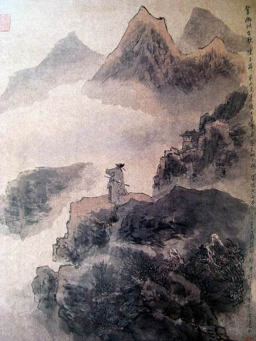

Runlong Tang
2010-08-08

登幽州台歌
[唐] 陈子昂
前不见古人，
后不见来者。
念天地之悠悠，
独怆然而涕下。
This is an ancient chinese peom by a Tang Dynasty's poet Chen, Zian. A direct translation without background knowledge is as follows.
On the Golden Platform
Looking forward, I see no one who has gone;
looking backward, I see no one who is coming.
With the thinking of the great universe,
lonely tears can not help dropping down.
I met this poem perhaps when I was in a primary school and have never forgotten it since then even without knowing its backgroud. This poem is so simple that everyone can have some understanding of it at once. To me, it immediately creates an enormous and also a little dreadful imaginary space, in which one can feel by heart the greatness of time and universe and the smallness of human beings. The color of this poem seems to be the gray and yellow of a windy late Autumn evening.
(When I have time, I will add some backgound and personal comments for this peom.)